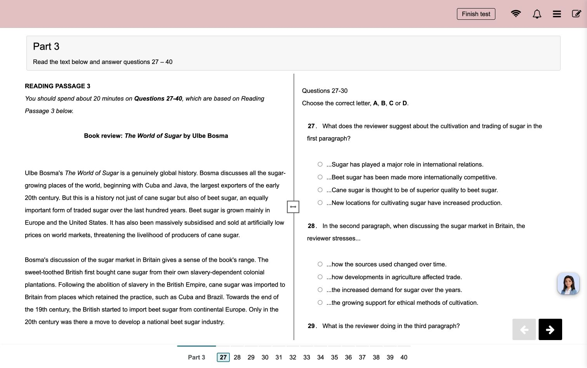
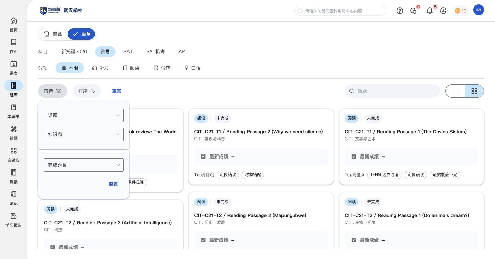

题库：自己选题，主动练习
题库让学生不必等待老师布置，就能按科目和篇章选择练习内容。这里说明怎么选资源、选择练习方式和回看练习记录；作答后的成绩、解析和订正统一引用作业篇。
功能定位与页面结构
题库
1. 选择内容整套／篇章 → 科目和分项 → 资源来源、主题与知识点。
2. 选择练习方式同一篇章提供模考模式、学练模式；已进入雅思阅读学练页面。
3. 回看练习记录资源卡片显示完成状态、最新成绩及高错点；历史记录保留历次表现。
核心功能清单
| 功能 | 实际用途 | 对比关注点 |
|---|---|---|
| 自主选题 | 按想练的科目、题型和主题，找到合适的练习内容。 | 学生能否按学习目标主动选内容，资源来源和主题是否清楚。 |
| 练习模式（模考／学练） | 同一资源提供模考和日常学练入口，供不同训练场景使用。 | 同一份资源是否能兼顾自主学习和考试训练，两种模式的差异是否清晰。 |
| 练习记录 | 选题时回看是否练过，以及每次练习的表现。 | 是否能在选内容时回看练习历史，避免资源和学习记录分离。 |
自主选题
按想练的科目、题型和主题，找到合适的练习内容。
- 资源分整套和篇章，科目入口包括新托福2026、雅思、SAT、SAT机考、AP。
- 雅思按听力、阅读、写作、口语组织；篇章还提供话题、知识点和学习状态等找题方式。
- 篇章卡片保留名称、来源与话题，方便判断内容是否适合当前学习目标。

对比时可关注：学生能否按学习目标主动选内容，资源来源和主题是否清楚。
实际内容依据为雅思阅读篇章；其他科目与整套的内容待补。
练习模式（模考／学练）
同一资源提供模考和日常学练入口，供不同训练场景使用。
- 篇章卡片同时提供“模考模式”和“学练模式”。
- 已进入的雅思阅读学练页将原文与题目并列，题号可跳转，并提供完成测试入口。
- 该学练页面可见笔记和AI助教，顶部没有倒计时。相关工具的共用功能见作业篇。

对比时可关注：同一份资源是否能兼顾自主学习和考试训练，两种模式的差异是否清晰。
目前不能据两个入口推定完整的计时、提示或评分差异。
相关说明：共用 · 题型作答 · 共用 · 题目笔记与AI助教
练习记录
选题时回看是否练过，以及每次练习的表现。
- 资源卡片显示完成状态、最新成绩和Top高错点，提供回顾表现的线索。
- 展开“查看结果”可见历次记录的序号、分数、正确率、日期及查看入口。

对比时可关注：是否能在选内容时回看练习历史，避免资源和学习记录分离。
高错点的统计范围尚未确认，不能直接理解为当前学生的全部错误。
相关说明：共用 · 结果页面
与其他模块的关联
- 题库负责学生主动选内容；作业负责接收老师安排的任务。两处可使用同类答题和结果组件。
- 本章只写资源、模式和历史入口。逐题解析、成绩诊断、笔记和订正的完整说明引用作业篇。
- 自主练习是否自动更新教师学情，统一在独立联动说明中维护。
待补内容
- 整套资源和雅思以外科目的实际内容样例，当前仅确认相关入口。
- 模考和学练在计时、提交、成绩保存上的完整差别；学练已进入，模考仅确认入口。
- 历史列表可查看分数、正确率、时间；具体历史结果页面尚待补充。高错点标签的统计对象和范围也未确认。
操作依据
保留8组截图与完整页面观察，基础操作不单列为核心功能。
辅助截图：找题条件与开始练习说明


本轮产生的测试记录与状态变化
- 从一个已有成绩的篇章进入学练说明并开始阅读，未填写或交卷。
逐项操作记录与截图（按需查看）
- SQ01 截图 · 页面观察 — 题库支持整套/篇章、科目与分项；雅思整套当前暂无数据。
- SQ02 截图 · 页面观察 — 篇章模式的内容定位条件包含话题、知识点和完成题目；尚未确认这些分类中的有效资源样例。
- SQ03 截图 · 页面观察 — 雅思篇章卡片显示完成状态、来源/话题、最新成绩、Top高错点，并提供模考模式/学练模式及历史结果。
- SQ04 截图 · 页面观察 — 学生可从篇章进入学练模式，先查看练习说明并确认开始；未提交答案。
- SQ05 截图 · 页面观察 — 学练实际作答页：原文/题目并列、底部题号导航、笔记图标和AI助教；顶部未显示倒计时，未填写或交卷。
- SQ06 截图 · 页面观察 — 篇章查看结果下拉保留历史练习序号、分数、正确率、日期及查看入口；本条已有2026-10-15记录。
- SQ07 截图 · 页面观察 — 复查雅思整套列表当前为空；篇章已有有效卡片及学练入口，不将整套空状态写成无自主练习。
- SQ08 截图 · 页面观察 — 展开已完成篇章的历史成绩：显示第1次、0分、8%、2026/10/15 15:10及查看入口；未打开具体结果。